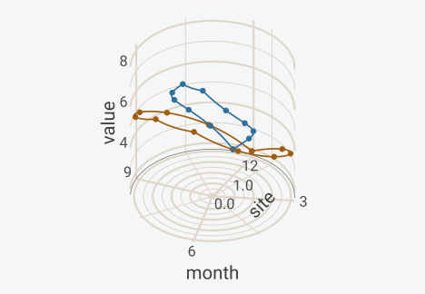
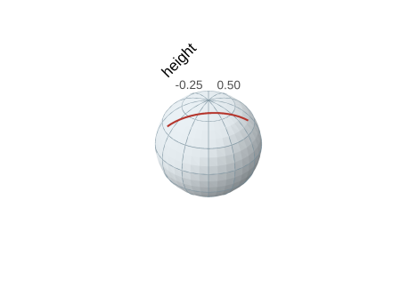
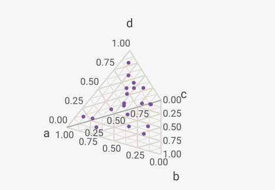

Coordinate frames place data according to their meaning. Monthly measurements can follow a circle, directions can lie on a sphere, and three- or four-part mixtures occupy a triangle or tetrahedron. This article draws examples in each frame, including a globe for geographic coordinates. Installation is covered in Get started, and Choosing camera views covers their shared camera arguments. Plotting curved spaces and spacetime covers intrinsic spherical and hyperbolic geometry.
Cylindrical coordinates
coord_cylindrical_3d() reads x as an angle around a
vertical axis, y as the distance from that axis and z as height. Twelve
months then close into a ring, and December sits next to January. The y
limits start at 0 so that site 1 lies on a ring of its own instead of on
the axis.
months <- data.frame(month = rep(1:12, 2), site = rep(c(1, 2), each = 12),
value = c(3:8, 8:3, 2:7, 7:2))
ggplot(months, aes(month, site, z = value, colour = factor(site))) +
geom_path_3d(linewidth = 0.8) + geom_point_3d(size = 2) +
scale_y_continuous(limits = c(0, 2)) +
scale_colour_manual(values = c("#2E6F9E", "#9E5E0F")) +
coord_cylindrical_3d(elevation = 35)
Spherical coordinates
coord_spherical_3d() reads x as longitude, y as latitude
and z as the distance from the centre. A radius that depends on latitude
flattens or stretches the sphere; here it bulges at the equator.
g <- expand.grid(lon = seq(0, 330, by = 30), lat = seq(-60, 60, by = 30))
g$r <- 1 + 0.2 * cos(g$lat * pi / 90)
ggplot(g, aes(lon, lat, z = r)) +
geom_point_3d(colour = "#2E6F9E", size = 2) +
coord_spherical_3d(elevation = 20)
A globe
coord_globe_3d() draws longitude, latitude and height on
a globe seen from the point given by centre. A path between
two cities follows the great circle in the projection. The height column
lifts the route slightly above the surface.
route <- data.frame(lon = c(-74, 140), lat = c(41, 36), height = 0.02)
ggplot(route, aes(lon, lat, z = height)) +
geom_path_3d(colour = "#B5342B", linewidth = 1) +
coord_globe_3d(centre = c(-150, 35))
Plotting maps and spatial data draws rasters and simple features on a flat map with a third dimension.
Ternary prisms
A composition of three parts that sum to a whole has two degrees of
freedom, which a ternary diagram draws as a triangle.
coord_ternary_3d() erects a prism on that triangle and uses
z for a response. The parts are mapped to a, b
and c; they are rescaled to sum to one, so percentages and
proportions give the same plot.
soil <- data.frame(sand = c(60, 20, 30, 10), silt = c(30, 50, 20, 30),
clay = c(10, 30, 50, 60), yield = c(2, 5, 4, 3))
ggplot(soil, aes(a = sand, b = silt, c = clay, z = yield)) +
geom_point_3d(size = 3, colour = "#3F7A3D") + coord_ternary_3d()
Quaternary simplices
Four parts have three degrees of freedom and fill a tetrahedron.
coord_simplex_3d() maps a, b,
c and d to the four corners, again after
rescaling each row to sum to one. Exponential draws normalised this way
are uniform on the simplex.
set.seed(1)
w <- matrix(stats::rexp(80), ncol = 4)
mix <- data.frame(a = w[, 1], b = w[, 2], c = w[, 3], d = w[, 4])
ggplot(mix, aes(a = a, b = b, c = c, d = d)) +
geom_point_3d(colour = "#7A4F9E", size = 2) + coord_simplex_3d()
Where next
Choosing camera views: view angles, projections and stable bounds.
Plotting curved spaces and spacetime: spherical, hyperbolic and Minkowski geometry.